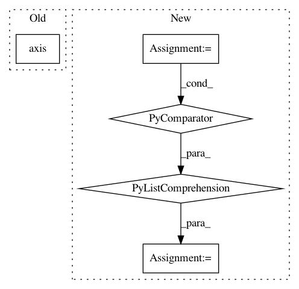

1fe68f56e51996417f982ce0a9c487f64a3b2158,src/skmultiflow/visualization/evaluation_visualizer.py,EvaluationVisualizer,__configure,#EvaluationVisualizer#,145
Before Change
plot_tracker.data[data_id] = [0.0 for _ in range(self.n_models)]
plot_tracker.sub_plot_obj.set_title("Running time (s)")
plot_tracker.sub_plot_obj.axis("off")
self._update_running_time_annotations(plot_tracker.sub_plot_obj,
plot_tracker.data)
elif metric_id == constants.MODEL_SIZE:
After Change
plt.ion()
self.fig = plt.figure(figsize=(9, 5))
self.fig.suptitle(self.dataset_name)
plot_metrics = [m for m in self.metrics if m not in [constants.RUNNING_TIME, constants.MODEL_SIZE]]
base = 11 + len(plot_metrics) * 100 // 3-digit integer describing the position of the subplot.
self.fig.canvas.set_window_title("scikit-multiflow")
// Subplots handler
In pattern: SUPERPATTERN
Frequency: 3
Non-data size: 5
Instances
Project Name: scikit-multiflow/scikit-multiflow
Commit Name: 1fe68f56e51996417f982ce0a9c487f64a3b2158
Time: 2018-10-15
Author: saulomastelini@gmail.com
File Name: src/skmultiflow/visualization/evaluation_visualizer.py
Class Name: EvaluationVisualizer
Method Name: __configure
Project Name: prody/ProDy
Commit Name: 9748b1dc29f7a5bcfb1eef8f3ecbb1e508ae1ca5
Time: 2018-02-16
Author: hongchun@pitt.edu
File Name: prody/dynamics/signature.py
Class Name:
Method Name: showAverageCrossCorr
Project Name: gboeing/osmnx
Commit Name: 1e6a99d900da6a9451bfc5ae7f1a7061b29a4686
Time: 2020-06-10
Author: boeing@usc.edu
File Name: osmnx/plot.py
Class Name:
Method Name: _config_ax